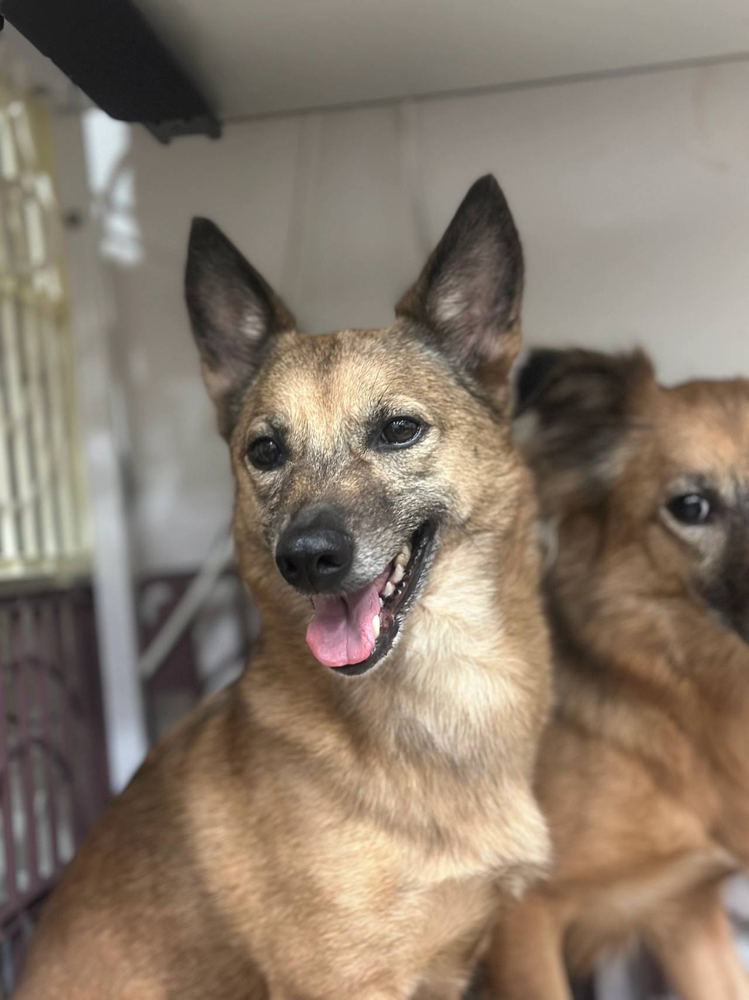
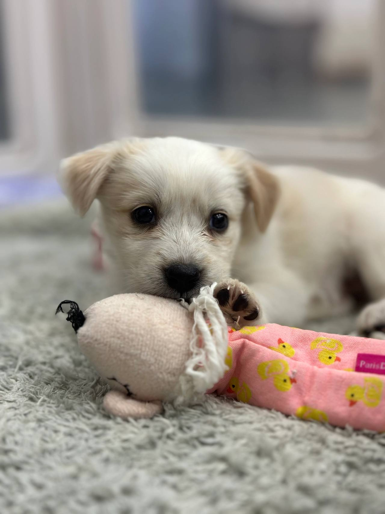
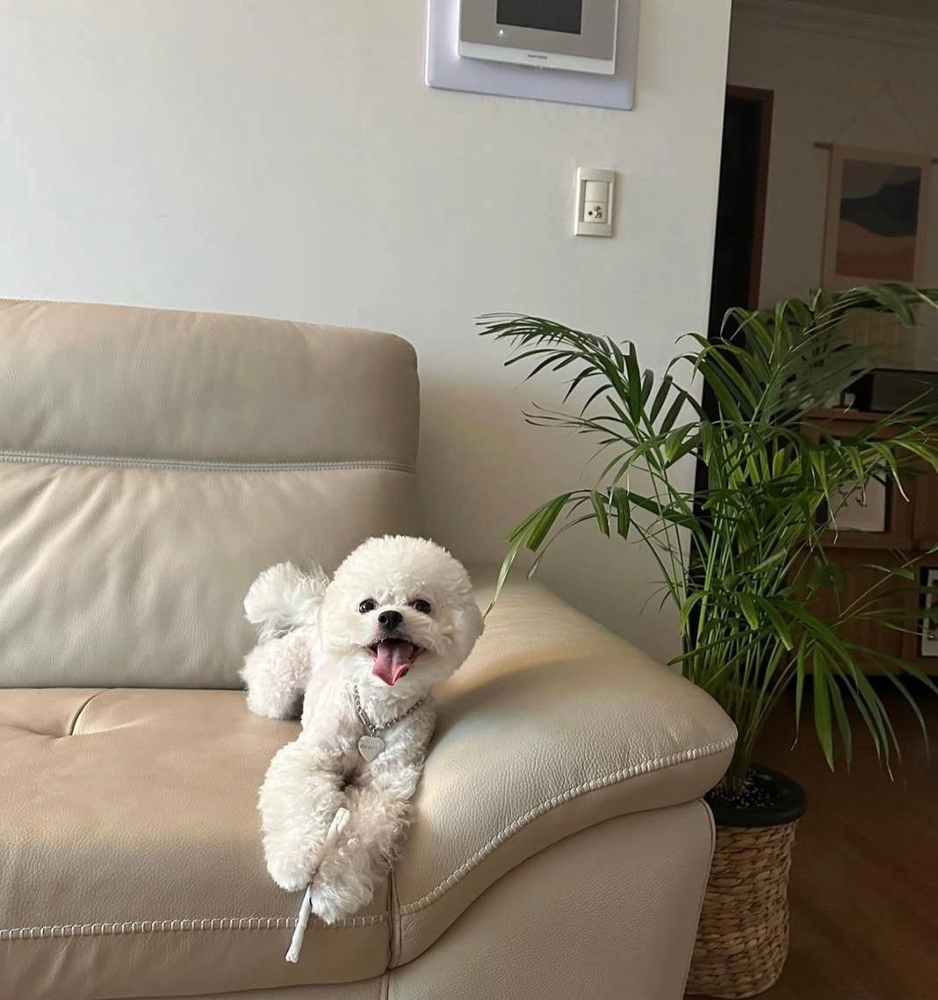

임신, 출산
출산 전후로돌보기 어렵거나아기와 함께 두기불안할 때
LOCAL GUIDE
평생을 함께할 반려견을 맞이하고자 할 때는 아이의 활동량과 털 빠짐, 훈련 가능성을 폭넓게 고려해야 합니다. 어린 시절의 귀여움뿐만 아니라 성견이나 노견이 되었을 때의 질병까지 감당할 각오가 필요합니다. 사전 심사와 인터뷰를 거쳐 가장 조화로운 가정을 찾아드리고 있습니다.
REHOMING
개인적인 사정으로 반려견과 더 이상 함께하기 어려운 상황일 때 체계적인 절차를 거쳐 아이를 입소시키고 무료 분양으로 보금자리를 이어 줍니다. 전화 상담(0505-707-0401)을 통해 현재 상황을 파악하며 무리한 수용 대신 여건에 맞춰 신중하게 돌봄을 시작합니다.
갑작스러운 환경 변화 속에서도 아이가 평온함을 잃지 않도록 세심하게 보살피며 다음 행보를 준비합니다. 이는 책임 있는 보호 속에서 아이에게 새로운 가족을 만날 기회를 열어 주는 과정입니다.
새로운 가족을 찾아 주는 일은아이에게 건넬 수 있는마지막 선물입니다.
출산 전후로돌보기 어렵거나아기와 함께 두기불안할 때

함께 살다동물 알러지가 나타나생활이 어려워졌을 때

해외로 데려갈 수 없거나이사한 집에서함께하기 어려울 때군 입대와 오랜 부재도같은 경우에 가깝습니다.

보호자가 아프거나연로해졌을 때아이도 나이가 들어집에서 돌보기 어려울 때
상담부터 입양 공고까지, 순서는 같습니다.

유선 상담을 통해 나이, 지역, 질병 유무와 특이 상황을 확인합니다. 센터 내부 공간을 종합적으로 살펴본 뒤 1차 입소 가능 여부를 결정합니다.

직접 센터로 방문하시거나 이동 지원 일정을 조율하여 선택합니다. 전국 어디든 전담 인력이 무상으로 픽업하여 이동을 돕습니다.

제반 확인 사항과 규정된 비용 조항을 면밀하게 검토합니다. 안내 내용을 충분히 숙지한 후 정식 입소 동의서를 작성합니다.

건강 상태와 함께 대형견, 소형견, 노령견 여부를 다각도로 살핍니다. 확인된 상태에 맞춰 아이가 안전하게 머물 전용 공간을 정합니다.

안정적인 생활 속에서 아이의 사진과 영상을 정성껏 촬영합니다. 새로운 인연을 맞이할 수 있도록 사전 자료를 차분히 정리합니다.

공식적인 입양 공고를 등록하여 아이의 다음 여정을 이끕니다. 적합한 보금자리를 찾아 새로운 가족과 따뜻하게 연결됩니다.
개별 일과와 성향 점검을 거쳐 생활 적응을 준비하고 있는 강아지 현황입니다.
양육 환경과 반려견의 성향이 부합하는지 점검하는 순서입니다.
주거 형태, 가족 구성원의 동의 여부, 돌봄 시간 등을 유선 상담을 통해 점검합니다.
보호소에 방문하여 개체의 건강 이력과 행동 특성을 확인하고 직접 대면 시간을 가집니다.
지속 양육에 관한 세부 항목을 확인하고 확인 서류를 작성한 뒤 가정을 이룹니다.
산책하고, 밥 먹고, 미용하는 보호소의 하루입니다. 사진을 누르면 그 이야기를 볼 수 있어요.
안내
영동 주민들 사이에서도 일회성 거래가 아닌 정식 상담과 심사를 거치는 올바른 입양 인식이 확산 중입니다.
입양 문의는 0505-464-1004입니다. 함께 살 가족과 사는 환경을 듣고, 찾아보는 고양이의 나이를 맞춰 만남을 안내합니다. 영동고양이무료분양는 판매 글이 아니라 상담 뒤 아이를 만나는 절차입니다.
입양 계약 단계에서는 구두 설명에만 의존하지 말고, 아이의 의료 기록이 명시된 서류를 꼼꼼히 확인하고 수령해야 합니다. 종합백신(DHPPL), 코로나 장염 백신, 전염성 기관지염 백신 등의 차수별 접종 확인 도장이 날인되어 있는지 대조합니다.
심장사상충 예방약 투약 주기와 내외부 기생충 구제 완료 시점 또한 향후 병원 방문 일정을 잡는 데 필수적인 정보입니다. 영동에서 신뢰성 있는 영동고양이무료분양 인도를 마무리하려면 이러한 보건 이력을 명확히 서류화하여 보관해야 합니다.
이전 병력이나 치료 흔적을 투명하게 확인하는 것은 입양 후 발생할 수 있는 의료비 지출을 예측하는 데 결정적인 도움을 줍니다.
사진과 영상은 빛의 각도나 편집에 따라 실제 모습과 차이가 발생할 수 있으므로, 반드시 현장 대면을 통해 아이의 온도를 느껴보아야 합니다. 눈동자의 맑기, 눈곱이나 귓속 분비물의 유무, 잇몸과 치아의 착색 상태, 피부 발진 여부 등을 꼼꼼히 살피며 신체 전반의 건강 지표를 직접 확인하시기 바랍니다.
또한 걸음걸이가 자연스러운지, 관절에 무리가 가거나 특정 다리를 저는 현상이 없는지 면밀히 지켜보는 것이 중요한 관찰 포인트입니다. 영동 중심에서 진정성 있는 영동고양이무료분양 과정을 거치고자 하신다면, 낯선 사람 앞에서의 긴장도와 호기심 어린 반응을 함께 체감하며 교감의 깊이를 더해가야 합니다.
보호자와의 첫 스킨십 과정에서 공격성을 보이는지, 부드러운 손길을 편안하게 받아들이는지 관찰함으로써 향후 가정 내 교육 방향성을 가늠할 수 있습니다.
1차 상담이 긍정적으로 마무리되면, 입양 서류 접수와 주거 환경에 관한 객관적 자료 검토가 신속하게 진행됩니다. 신분증 사본과 함께 주거지의 형태(자가, 전세, 월세) 및 반려동물 사육 허용 여부를 확인할 수 있는 증빙 서류를 준비하셔야 합니다.
또한 가족 구성원 중 동물 털이나 비듬에 대한 과민 반응이 있는지 확인하기 위해 사전 알레르기 검사 결과를 요청할 수 있습니다. 영동 중심의 안전한 영동고양이무료분양 정착을 도모하기 위해, 베란다 난간이나 현관문 안전 펜스 등 이탈 방지 시설의 시공 상태를 사진으로 확인합니다.
원룸이나 좁은 다세대 주택의 경우 중대형 고양이 개체의 입양이 공간적 제약으로 인해 엄격히 제한될 수 있습니다.
도심의 작은 아파트에서 거주하는 한 1인 가구 신청자는 당초 에너지가 넘치는 테리어 계통의 어린 자견 입양을 강력히 희망했습니다. 그러나 유선 상담을 통해 직장 근무 시간과 실내 공간을 면밀히 분석한 결과, 해당 견종의 활동성을 감당하기 어렵다는 결론에 도달했습니다.
상담사는 차분한 성향을 지닌 3세령의 소형 성견과의 대면을 권유하였고, 보호자는 직접 현장을 방문하여 아이의 온순한 눈빛과 안정된 보폭을 확인했습니다. 영동 생활권에서 섣부른 영동고양이무료분양 결정을 내렸다면 매일 퇴근 후 파괴 행동과 짖음으로 큰 혼란을 겪었을 상황이었으나, 냉정한 성향 매칭을 통해 평온한 일상을 맞이하게 되었습니다.
보호자의 이상형과 실제 주거 여건 사이의 간극을 좁혀주는 전문 상담이 왜 필수적인지를 명확히 보여주는 사례입니다.
입양 당일 너무 반가운 마음에 온 가족이 번갈아 가며 안아주거나 친구들을 집으로 초대하는 행위는 아이에게 극심한 공포감을 심어줄 수 있습니다. 낯선 공간에 도착한 첫 주는 본인만의 안전 공간(켄넬, 방석)에서 스스로 주변을 관찰하며 숨을 고를 수 있도록 조용한 분위기를 유지해야 합니다.
처음 며칠 동안은 밥을 먹지 않거나 배변 실수를 저지르더라도 절대로 다그치거나 큰 소리로 야단쳐서는 안 됩니다. 영동의 아늑한 보금자리에서 진정한 영동고양이무료분양 가치를 실현하고자 한다면, 신뢰가 쌓일 때까지 아이가 먼저 다가오기를 기다려주는 여유로운 자세가 요구됩니다.
가정 임시 보호 경험이 있는 아이라면 임보 가정에서 사용하던 수건이나 장난감을 함께 비치해주어 익숙한 후각적 안도감을 제공하는 것이 좋습니다.
보호 시설의 입양은 상업적 판매가 아니므로 별도의 분양 수수료는 없으나, 필수적인 보호 관리 실비가 정산됩니다. 이 비용은 유기 방지를 위한 최소한의 허들이자 그동안의 위생 처치, 중성화, 백신 접종에 투입된 실비를 보전하는 성격입니다.
조건 없는 0원 거래나 즉석 인계를 요구하는 것은 생명의 가치를 훼손하고 무분별한 입양을 초래하므로 절대 허용되지 않습니다. 영동에서 건전한 영동고양이무료분양 절차를 이행하고자 하신다면, 행정 서약서의 세부 조항과 비용 집행 내역을 투명하게 확인하셔야 합니다.
보호 동물 행정 등록 및 내장형 칩 삽입 여부까지 꼼꼼히 확인하여 법적 소유자 변경을 정상적으로 완료해야 합니다.
새 집에 도착한 첫날, 아이는 낯선 냄새와 소리로 인해 극도의 불안감을 느끼며 구석으로 숨거나 밥을 거부할 수 있습니다. 이때 과도하게 안아주거나 말을 걸기보다는 스스로 냄새를 맡으며 주변을 탐색할 수 있도록 일정한 거리를 두고 묵묵히 지켜봐 주는 인내가 요구됩니다.
가정 내 안전한 구역에 독립된 켄넬이나 쿠션을 배치하고, 조용하고 안락한 조도를 유지해주면 심리적 안정에 큰 도움이 됩니다. 영동 거주지에서 영동고양이무료분양 실천 후 초기 2주간은 지인 초대나 장거리 외출을 삼가고, 정해진 시간에 사료를 급여하며 안정적인 일상 리듬을 각인시켜야 합니다.
단기 임시 보호를 통해 가정 생활 적응을 먼저 돕는 방식 또한 아이의 본래 성향을 발현시키고 분리불안을 경감하는 데 매우 유익한 대안이 됩니다.
첫 단계는 전용 번호인 0505-464-1004를 통해 진행되는 심층 유선 상담으로, 입양 희망자의 거주 환경과 가족 구성을 객관적으로 파악합니다. 보호자가 희망하는 반려견의 성별, 연령, 활동 성향을 청취한 후 현재 보호소 내에서 가장 적합한 아이를 선별 매칭하는 작업입니다.
유선 상담에서는 과거 반려동물 양육 경험 유무, 세대원 전원의 찬성 여부, 하루 중 집을 비우는 공백 시간 등을 가감 없이 여쭙게 됩니다. 영동 일대에서 영동고양이무료분양 신청을 준비하시는 경우, 거주지의 지리적 특성과 산책 인프라에 대한 의견도 함께 교환하여 매칭의 정확도를 높입니다.
상담 과정에서 양육 여건이 부적합하다고 판단될 경우 입양 진행이 정중히 반려될 수 있으며 이는 아이의 복지를 위한 조치입니다.
사람에 대한 트라우마로 구석에서 떨기만 하던 한 유기견은 즉각적인 입양 대신 3개월간의 가정 임시 보호 프로그램에 먼저 연계되었습니다. 임시 보호자는 아이에게 어떠한 스킨십도 강요하지 않고 묵묵히 맛있는 사료와 조용한 잠자리를 제공하며 기다려주었습니다.
시간이 흐르며 아이는 굳게 닫혔던 마음의 문을 열고 스스로 다가와 머리를 비비기 시작했고, 결국 임시 보호자가 평생 입양을 최종 서약하게 되었습니다. 영동 일대에서 뜻깊은 영동고양이무료분양 기적을 만들어낸 이 사례는 상처 입은 생명에게 가장 필요한 것은 화려한 환경이 아닌 묵묵한 인내심임을 상기시켜 줍니다.
마음의 상처를 지닌 개체일수록 단기 임시 보호를 통한 환경 적응이 영구적인 가족 형성의 훌륭한 징검다리가 되어줍니다.
입양 계약서 체결 및 동물등록 진행
소유자 변경을 위한 동물등록 서류를 정식 작성하고 재유기 및 재파양 방지 조항이 명시된 계약서에 날인합니다.
입양 자격 심층 인터뷰 및 교육 이수
기초 훈련 방법, 이상 행동 대처 요령, 반려인으로서의 법적 의무 사항에 대해 면밀한 교육과 문답을 거칩니다.
안전 인계 및 초기 가정 적응 모니터링
전용 이동장을 활용하여 안전하게 귀가한 후 적응 가이드라인에 따라 관리하며 상담사와 주기적으로 소통합니다.
영동고양이무료분양는 어디서 문의하나요?입양 상담 전화는 0505-464-1004입니다. 영동에서 고양이 입양을 알아보면 생활을 듣고 만날 아이를 안내합니다.
영동에 따로 적힌 보호소 주소가 있나요?영동고양이무료분양 페이지는 영동 상담 안내입니다. 이 글에 없는 주소를 그 지역 지점이라고 안내하지 않습니다.
전화하면 바로 진행되나요?자리가 없거나 생활이 맞지 않으면 바로 진행되지 않습니다. 전화로 확인한 뒤 만남을 정합니다.
온라인 공고의 사진만 보고 즉시 입양을 확정해도 되나요?사진 속 모습과 실제 기질이나 활동량에 큰 차이가 있을 수 있으므로 현장 방문을 통한 직접 대면 교감이 필수 조건입니다.
입양 문의와 사전 상담은 어디로 연락해야 하나요?입양 관련 전용 상담 창구인 0505-464-1004 유선 번호로 연락하시면 상세한 자격 요건과 절차를 안내받으실 수 있습니다.
입양 시 발생하는 제반 비용이나 책임비는 어떻게 되나요?생명을 0원에 거래하는 구조가 아니며 기초 건강검진, 예방접종, 중성화 수술 지원 등 기본 케어 실비에 따라 유선상으로 투명하게 안내합니다.
입양 대상 아이들의 사진이나 프로필 공고는 어디서 보나요?유선 상담 후 신청자의 생활 환경에 적합한 개체 프로필을 안내해 드리며 공식 채널을 통해 기본 정보를 확인하실 수 있습니다.





CONTACT
입양과 입소, 전국 어디서든 전화로 상담합니다.
전국 입소문의